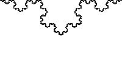

| La Curva di Koch |
|---|
|  |
La curva di Koch apparve per la prima volta su un documento scritto dal matematico Helge Von Koch.
Questa curva frattale ha inizio da un semplice segmento alla quale vengono ripetuti 3 passaggi:
1) dividere il segmento in tre segmenti uguali;
2) cancellare il segmento centrale, sostituendolo con due segmenti identici che costituiscono i due lati di un triangolo equilatero;
3) tornare al punto 1 per ognuno degli attuali segmenti.
Partendo da un segmento, quindi, se ne ottengono quattro, nella seconda ripetizione se ne ottengono 16 (4 x 4) e così via. Se si ripete questa operazione infinite volte, otteniamo infinite copie della prima ripetizione.